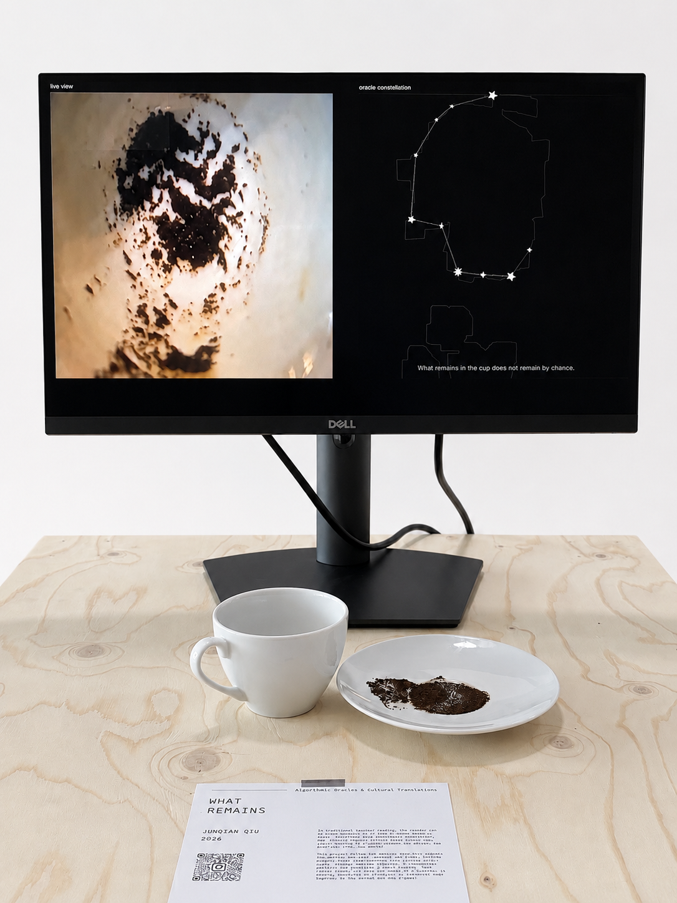
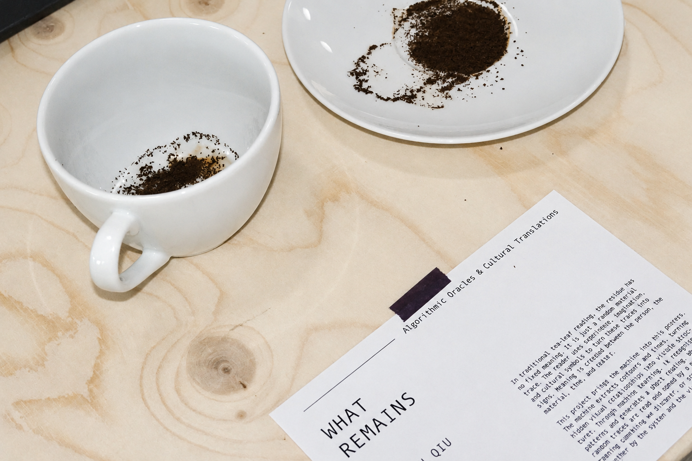
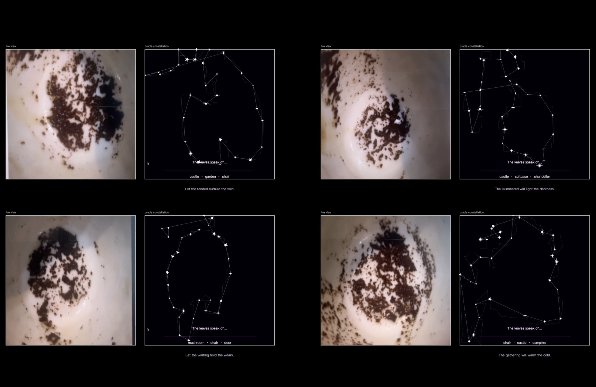

What remains
In traditional tea-leaf reading, the residue at the bottom of the cup doesn’t have a fixed meaning. It is just a random material trace. The reader uses experience, imagination, and cultural symbols to turn these traces into signs. Meaning is not simply read from the residue. It’s created between the person, the material, time, and belief. The machine acts as an agency into this divination process. The machine extract contours, key points, and lines. It turns hidden visual relationships into visible point-and-line structures. Then, through machine learning, it recognises possible patterns and generates a short reading. The machine is also making connections, but through computational rules instead of human intuition. So the real question of this project is: How does a machine interpret and participate in this form of divination? when random traces are read, connected, and named by a machine, how is meaning produced? Is meaning something we discover, or something made together by the system and the viewer?
Junqian Qiu
Junqian Qiu’s practice explores the intersections between technology, mysticism, materiality, and non-human agency. Working across interactive media, machine learning, computer vision, and generative systems, she transforms organic traces, symbolic structures, and bodily interactions into sensory and poetic experiences. Her work considers how technology may create spiritual transformation and transcendent imaginaries. Drawing from philosophy, divination, religious culture, and virtual media practice, she investigates the relationships between humans and non-humans, mind and body, material and environment, and the physical and spiritual realms.